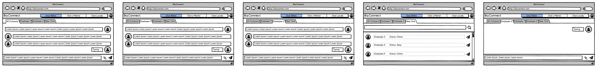
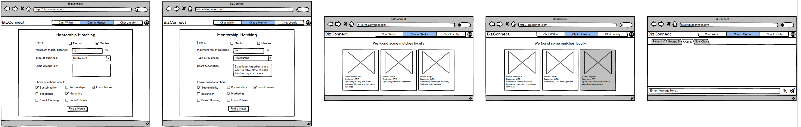
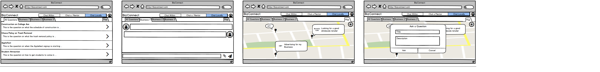
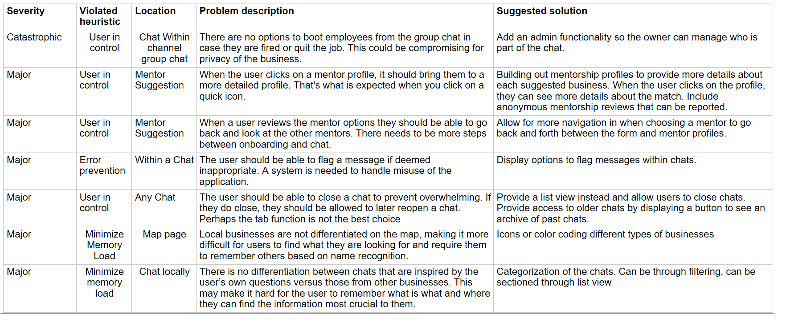

Type: A HCI research for local Ithaca business owners
Role: UX Designer and Researcher
Timeline: September 2017- December 2017
Overview: Local businesses in Ithaca wish to connect with others in the area for mentorship, collaboration, and companionship, but struggle to do so.
General disconnect among and lack of mentorship for local Ithaca businesses owners motivated us to create the platform for business owners and employees to connect in a meaningful and personal manner.
As a result, the app would:
- Help connect business owners in the local Ithaca community so they are able to share their experiences with each other.
- Establish a platform that allows for increased efficiency in communication for local businesses.
- Provide a forum for local business issues to be easily recognized and addressed by the community.
Problem
Local businesses are a huge community within Ithaca but despite occupying the same small town, there seems to be little to no interaction between the businesses, which is detrimental to business opportunities and open communications. Local businesses such as store owners, restaurant owners, craftsmen and even farmers have so much to offer, but lack a way to do so.
Understanding the Space
To help us understand the points of the opportunity of intervention in the current state of how local businesses operate, we conducted interviews with local business owners
and mapped out some key findings. From these findings, we found out main goals that local business owners are seeking from their business.

Persona
Brenda is 35 years old, married and lives in Downtown, Ithaca. She co-owns a local Asian fusion restaurant along with her husband. They have been in this business for roughly 6 years now.
Although her area of expertise is Chinese cuisine, she loves cooking, experimenting with and learning new and different cuisines. Neither have any formal culinary or business education and most of their
expertise comes from experience and occasional inputs from friends and colleagues. Her husband and she take care of most of the aspects of their business on their own. Once in awhile during holidays and festival season,
they find it necessary to hire a couple of temporary help. Although they are familiar with the use of technology, they don’t prefer it much since usually the learning curve is high and the value addition isn’t much.
Behavior:
- Particular about food she serves
- Loves to talk with her customers and learn about their preferences
Goals:
- Improve work efficiency and saving money
- Hopes to communciate with other local businesses to collaborate
- Cater and adapt to customers' needs
Ideation
We decided we wanted to create something that helped business owners engage with each other. This seemed like a large problem we heard about in our first round of user interviews. When asked what stood out the most, everyone agreed on the combined ideas of bulk ordering and waste management. We wanted our design to allow for business owners to collaborate, as they said they wanted, and we recognized that any collaboration tool would be more likely to be used if it had a profit motive attached to it. We also decided on creating a website as we wanted to reach all demographics of the business owners. It was also said in the interview that business owners aren’t tech savvy. We used this to decide that a website would be more widely used. We then went into sketching a new design.

Our first draft design included a chat section, a bulk order section, and a surplus section as the main features. Additionally, we included a preferred sellers section (to keep seller/supplier information in one section) and an analytics section that would should business owners how much money they have saved over time. All of these features combine to allow business owners to bulk order together, saving money, and give away their surplus of materials to each other, reducing waste and creating a collaborative community. Additionally, the chat feature will automatically show local businesses and their associated owners that are nearby, so that business owners can communicate and mentor each other.
User Feedback
We conducted 3 user feedback interviews and these were our key findings:
- The bulk ordering and surplus features of our business coordination website do not address tangible needs to the user group.
- Businesses in the interviews, as a whole, liked the idea of mentorship between businesses.
- Businesses want to connect with who they want and about what they want in a quick and easy manner.
Iteration
We designed our mid-fidelity prototype to be a website using Balsamiq. We named our website “BizConnect” in hopes of helping local businesses to build connections with each other and to get engaged within the local community. Since we believed that communication is the best way to build connections, we designed our prototype to be a platform that provides different channels for business conversations in various context. We made the design choice of adopting the most commonly-seen messenger interface to make our design more intuitive and user-friendly. While keeping the chat interface consistent across the different chat channels, we implemented three main features in this prototype to support the following three primary tasks:
- Chat Within
- Chat a Mentor
- Chat Locally
Heuristic Evaluation
From our heuritstic evaluations, these were the biggest issues with out Balsamiq prototype.
Final Iteration
From the Balsamiq prototype to the Invision prototype, we took into consideration our heuristic evaluations. More specifically, we focused mostly on the higher severity problems. Furthermore, we focused on solutions that would help accomplish the main user tasks needed to highlight functionality for user evaluations. Another round of user testing was done to evaluate our design. In total, many edits to the Invision prototype was done to create this final version.